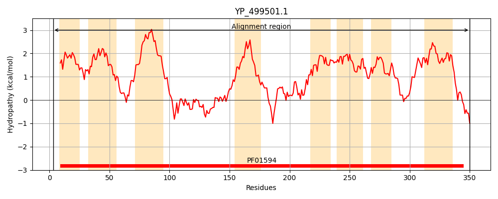
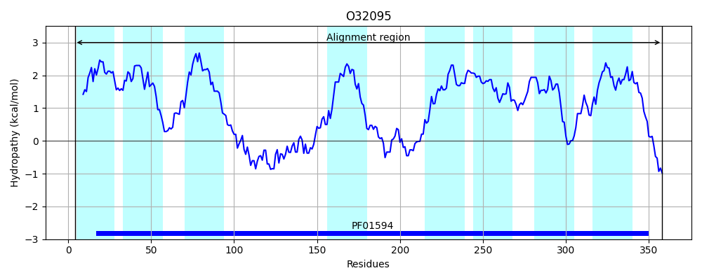
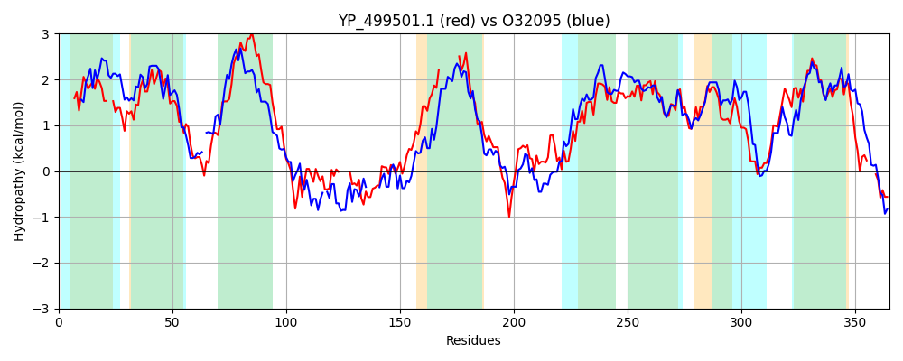

Hit Accession: O32095
Hit TCID: 2.A.86.1.8
Hit Description: gnl|BL_ORD_ID|7086 gnl|TC-DB|O32095|2.A.86.1.8 UPF0118 membrane protein yueF OS=Bacillus subtilis GN=yueF PE=3 SV=1
Mach Len: 365
e:0.000000
Query TMS Count : 8
Hit TMS Count: 8
TMS-Overlap Score: 7.650000
Predicted Substrates:None
BLAST Alignment:
Score: 529 , Bit scores: 208 bits, E-value: 2.7e-64, Alignment length: 365, Percentage identity: 36
Query: 3 NKVWFRTGIALIMLFILIKLFM--EVHEVFTPIATIIGSVFLPFLISGFLFYICLPFQNLLEKVGFPRWASITTIMLALFAIIGLIVAFVAPIIISNINNLISQTPALQKEAEQIIKFALAQMD----KLPEDVTSRITNMVKSMGDGVTNILSNSLQYITSLISTIF--------LLIMVPFFLIYMLKDHEKFIPAVAKFFKGERKVFFVDLLTDLNFTLKSYIQGQVTVSVILGIFLYIGYSIIDLPYIPLLVLFAGVANLIPFLGSWLSFAPAAILGIIDSPTTFIWVCIITLIAHQLEGNIITPNVMGKSLSIHPLTIIVVILAAGDLGGFTLVLIAVPLYAVLKTVVSNI---FKYRQR 350
+KV F T L +LF+L+ +F+ +V VF P I ++F P LI+G L++I P LLEK PR SI I L ++ I A V PII + + L + P K+ + + K L+ + +D S + + +T+ L N Q ITS +S +F ++I VPF L YMLKD +F K + + + DL+ TL +Y QGQ+ + + +G +IGY I LPY +L + + N+IP++G +L APA I+G +DSP ++ I+ +I QL+GN+++P V+GK L+ HPLTII++++ AG GG +++AVP+YAV+K NI K RQR
Sbjct: 4 SKVHFWT---LQILFVLLIIFVATKVSFVFQPFIVFISTLFFPMLIAGILYFIFNPVVRLLEKK-IPRTLSILLIYLLFIGLLAFISASVGPIITAQVTGLFNNLPDYIKQIQALTK-DLSHSQWFTWMMNQDYVS-----ISKIEQSLTSFLQNLPQNITSSLSAVFGVVTNITLVIITVPFILFYMLKDGHRFPHLAVKILPASYRTEGLKIFKDLSDTLAAYFQGQLLICLFVGTACFIGYLIAGLPYALILGIVMAITNIIPYVGPFLGAAPAVIVGFMDSPAKALFAIIVVVIVQQLDGNLLSPLVIGKRLNTHPLTIILLLIGAGSFGGILGMILAVPVYAVVKAFFLNIVRLIKLRQR 358 | Protein Hydropathy Plots: |
|---|
|  |  |
Pairwise Alignment-Hydropathy Plot:
|
|---|
|  |